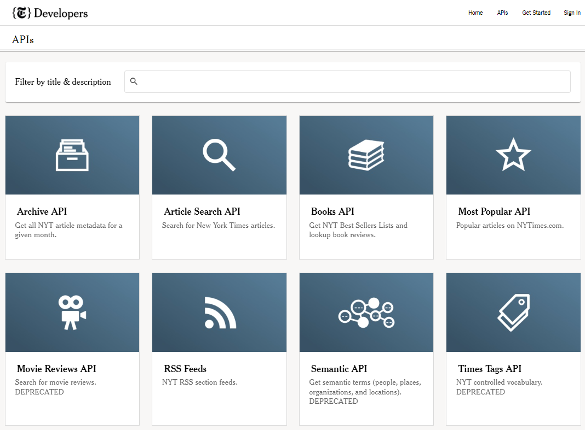
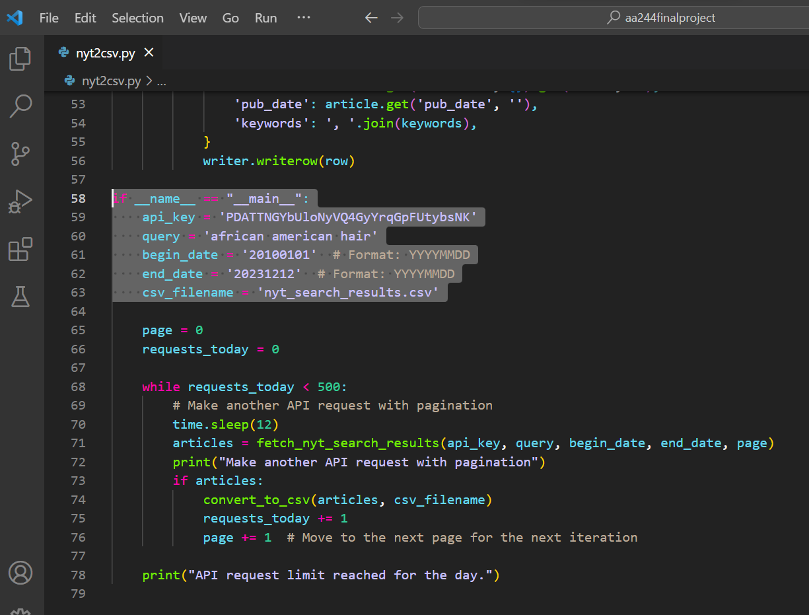
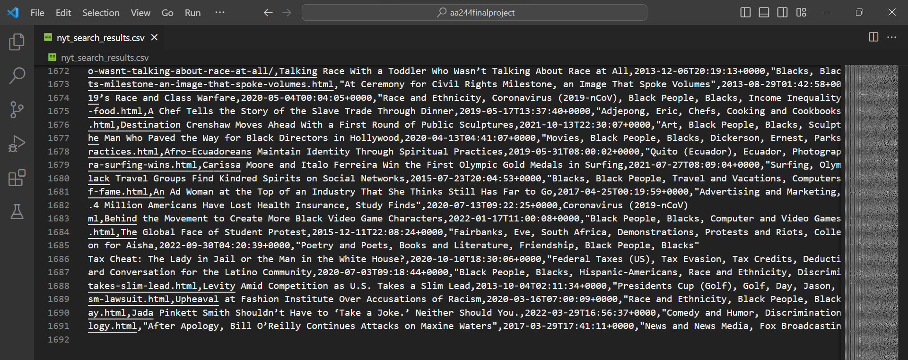
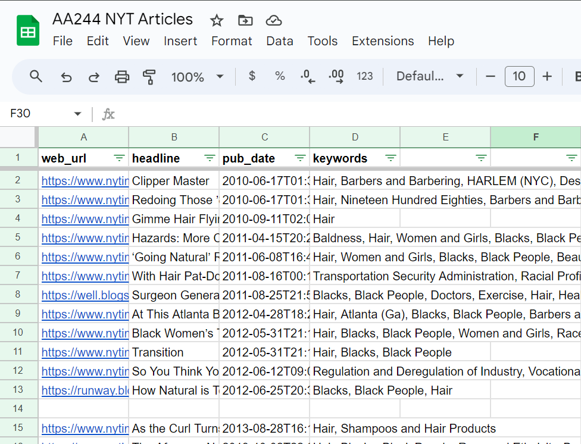
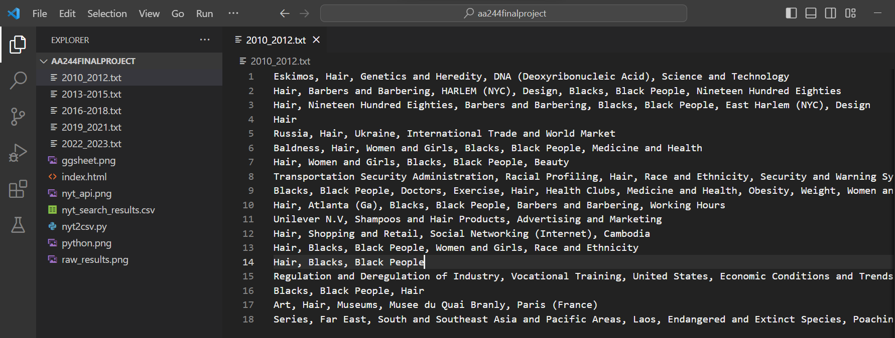

Detecting Hair Narratives
African American Hair representation on New York Times

New York Times' API

Python in VS Code to collect data

Raw result of 1691 articles from 2010 to 2023

Google Sheet Data [Click to view]

Keywords mapped to years
Visualize keyword frequencies over years
Visualize keyword frequencies within 5-year phases